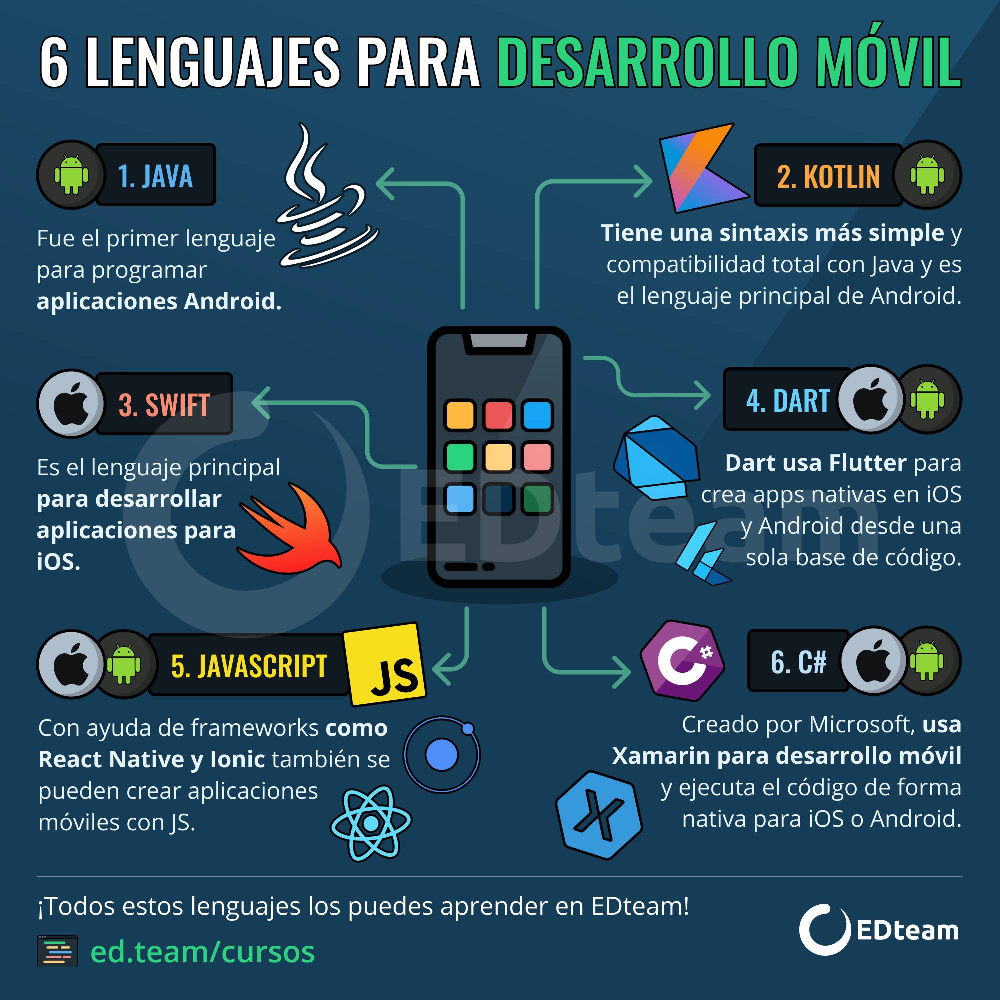

Stacks principales
Android se desarrolla sobre todo con Kotlin y Java, mientras que iOS utiliza Swift y Objective‑C para sus apps nativas.
Frameworks multiplataforma emplean otros lenguajes como Dart, JavaScript/TypeScript o C# para generar apps móviles desde un mismo código.
